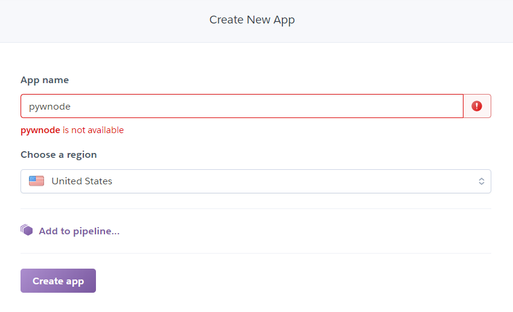
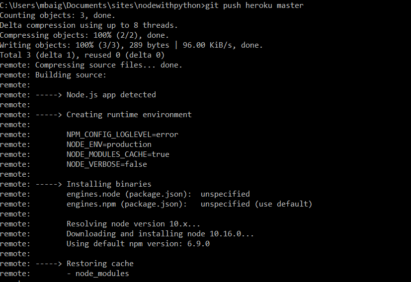
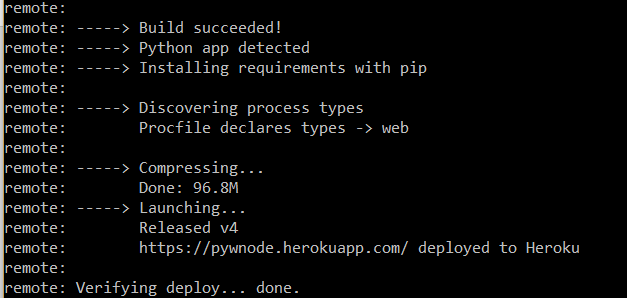

This article will show you how to add a Python + Pandas script to your NodeJS web app, and then deploy the app to Heroku. This could be a great starting point for developing rich, fast and asynchronous web applications that are also equipped with the data capabilites brought by Python and it's libraries.
For one of my assignments in a Data Visualization course, I utilized a Python script on top of a NodeJS server to do some real-time data filtering and reshaping on a fairly large dataset, which I then visualized using D3. Before you ask, yes, I considered MongoDB however I dropped the idea as I didn’t really think I could expect my instructor to go through the headache of installing Mongo and creating a new database in her machine just to grade my one assignment. On the other hand, chances were she already had Python installed in her machine so using Python + Pandas seemed a better option.
Anyways, fast forward 2 days of intensive coding and my assignment is submitted. I now want to upload it to the Interwebs for the world to see. Heroku has a great free service and good cli tools, as well as integration with Git. My pain-point, however, Heroku by default detects either a NodeJS app or a Python (Flask/Django) app, but not a combination of the two.
Of course, there are prerequisites. Here is what you need:
First thing you do is make a new NodeJS project. Open your terminal, go to your directory of choice and type the following commands
$ mkdir projname
$ cd projname
$ npm init
$ npm install --save express
// index.js
const express = require('express');
const app = express();
const port = 3500;
const path = require('path');
app.get('/', (req, res) => {
res.send("There is more to this server than meets the eye!");
});
app.listen(port, () => console.log(`Port ${port} is now occupied by...me!`));
$ node index.js
We’ll work with some small, simple data for now. Create a file called data.csv in the same folder as index.js and paste the following in there.
"","tconst","startYear","originalTitle","averageRating","numVotes","profit","moviescore","genres"
"1","tt0000009",1894-04-22,"Miss Jerry",5.6,76,NA,9.22605007573664,"Romance"
"2","tt0000147",1897-04-22,"The Corbett-Fitzsimmons Fight",5.2,290,NA,17.3666346768739,"Documentary"
"3","tt0000147",1897-04-22,"The Corbett-Fitzsimmons Fight",5.2,290,NA,17.3666346768739,"News"
"4","tt0000147",1897-04-22,"The Corbett-Fitzsimmons Fight",5.2,290,NA,17.3666346768739,"Sport"
"5","tt0000335",1900-04-22,"Soldiers of the Cross",6.3,39,NA,7.00999286732875,"Biography"
"6","tt0000335",1900-04-22,"Soldiers of the Cross",6.3,39,NA,7.00999286732875,"Drama"
"7","tt0000574",1906-04-22,"The Story of the Kelly Gang",6.2,504,0,24.9991999871996,"Biography"
"8","tt0000574",1906-04-22,"The Story of the Kelly Gang",6.2,504,0,24.9991999871996,"Crime"
"9","tt0000574",1906-04-22,"The Story of the Kelly Gang",6.2,504,0,24.9991999871996,"Drama"
"10","tt0000615",1907-04-22,"Robbery Under Arms",4.8,14,NA,3.66606055596467,"Drama"
"11","tt0000630",1908-04-22,"Amleto",2.9,11,NA,2.52586618806302,"Drama"
"12","tt0000675",1908-04-22,"Don Quijote",4.3,10,NA,2.93257565972304,"Drama"
"13","tt0000676",1908-04-22,"Don Álvaro o la fuerza del sino",3.8,8,NA,2.46576560118759,"Drama"
"14","tt0000679",1908-04-22,"The Fairylogue and Radio-Plays",4.8,33,NA,5.62849891178812,"Adventure"
"15","tt0000679",1908-04-22,"The Fairylogue and Radio-Plays",4.8,33,NA,5.62849891178812,"Fantasy"
# script.py
import pandas as pd
import sys
import json
# Read data
data = pd.read_csv('data.csv')
# Capture first process argument: genre (we’ll provide this later from the NodeJS App)
genre = sys.argv[1]
# Find sum of the numbers of votes of all movies that are of the requested genre
retVal = data[data['genres'] == genre]['numVotes'].sum()
# Print value as json. This is important to retrieve it from the Express app.
print(json.dumps({'value': str(retVal)}))
In order to call our Python script, we will use the npm package child_process. From the root of the project directory, run from the command line:
$ npm install –-save child_process
app.listen() snippet.
// for now, hardcoding the genre as 'Drama'
var genre = 'Drama';
// create a child_process object called spawn, then use it to spawn a new process
var spawn = require("child_process").spawn;
// the first argument is the command line argument, and the second is a list of all process args.
var process = spawn('python', ["./script.py", genre]);
spawn() function takes two parameters: the command and it’s arguments. In our case, our command is python and the arguments are the script, and the movie genre Drama.
In essence, this function tells NodeJS to execute the following command on the system
: $ python ./script.py Drama
Check out the Python script again: more specifically the last line. After performing whatever complex operations we wish to perform, we are printing out a JSON object. This is important as the contents of this print() are what NodeJS will receive as the return value from the Python script.
Let’s
spawn() code within the express request handler. Our final server.js code looks as below:
// index.js
const express = require('express')
const app = express()
const port = 3500;
// for now, hardcoding the genre as 'Drama'
var genre = 'Drama';
// create a child_process object called spawning
var spawn = require("child_process").spawn;
app.get('/', (req, res) => {
// Spawn new process using "python script.py {genre}"
var process = spawn('python', ["./script.py", genre]);
// the print() is our stdout. We capture the JSON as an argument called "data" in our callback function
process.stdout.on("data", function(data){
// print out the data to our console to check
console.log(data.toString());
// send the data as JSON to the calling browser
res.send(JSON.parse(data));
});
});
app.listen(port, () => console.log(`Port ${port} is now occupied by...me!`));
$ node index.js, and navigate to localhost:3500. There, the following structure should be seen:
{
value: "586"
}
The first thing we must do is to make sure Heroku is aware of what Python version to use, and what Python libraries will be needed. The Python version is communicated using the runtime.txt file and the libraries to install via pip are in the requirements.txt file. Hence, in the root folder, make the two files and populate them like so:
runtime.txt: python-3.7.3
requirements.txt:
pandas==0.23.4
Any other packages that you might use in your Python script must be mentioned in the requirements.txt file. This is because Heroku executes the command pip install -r requirements.txt to install the dependecies required by the project
This should take care of the Python environment. The problem, now, is that when we push to Heroku, Heroku will see the requirements.txt file and the script.py file and assume the entire web application is Python app (running Django or Flask). It, however is a NodeJS app, and therefore we must explicitly define the starting script. This can be done in a file called Profile (no extension). So in the same folder, create a new file called Procfile with the following command:
Procfile: web: node index.js
Procfile is the file containing the particular commands to be executed by Heroku to start the app. In our case, we run our NodeJS start script that we have been executing locally as well.
Finally, create a new Heroku app from the online console. For this tutorial, the name of the new Heroku app is pywnode

It’s time to deploy! Of course, since we’re using Git to deploy, we’ll need to make a repository first
$ git init
$ git add .
$ git commit -m “The beginning of something awesome”
$ heroku git:remote -a pywnode
pywnode with the last command.
Great! We have a repository, and with the last command there, we set the remote of our repository to be our Heroku app! Just one last thing before we push the code through.
The requirements.txt file will tell Heroku that the app is a Python app, and the Procfile informs it to start a NodeJS server. We need to explicitly tell Heroku what’s going on in this app. Through the following commands, we tell Heroku that the first buildpack to run is NodeJS and the 2nd is Python. It will then, during initialization, install bundles for both in order.
$ heroku buildpacks:add --index 1 --app pywnode heroku/nodejs
$ heroku buildpacks:add --index 2 --app pywnode heroku/python
--app in your case should be your Heroku app name instead of pywnode
Now if we check using
$ heroku buildpacks --app <your-app-name>
Finally, we’re all set to push the app.
$ git push heroku master

Followed by a prompt of “Python app detected” with an installation of pip packages

Congratulations! You should be done at this point! To view your app on the internet, head over to https://yourappname.herokuapp.com